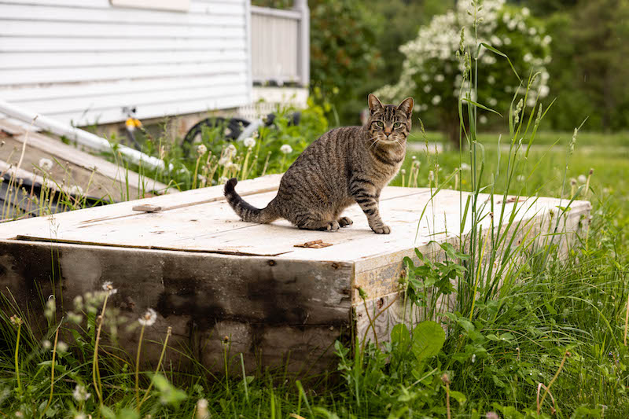

wollecru
/vuh-lə-kru/
A farm that utilizes sheep in an ecologically diverse system to produce high quality wool, wine, and flora.
Farming Healthy Soil
Healthy soil and water produce the best food, fiber, and plants. Therefore our farming practices revolve around improving the land we steward. Bordered by the Adirondack Mountains and Lake Champlain, Wollecru is a 60 acre farm aiming to promote biodiversity with intentional plantings and intensive rotational grazing throughout perennial gardens, orchards, vineyards, pastures, and woodlands. Nature populates the land with insects, fungi, small mammals and large predators that live in harmony with our goals to raise sheep and the products that they provide. From the coyotes who manage deer and vole populations, to the mighty dung beetles who carry manure deep into the soils, these natural allies are doing constant, silent work that helps our farm thrive. The sheep drop manure, trample debris, and eat green growth, shedding roots as fuel for the microorganisms that live in the topsoil. In return this subterranean life provides ideal growing conditions for all the plants, from the smallest wildflowers coloring in the pastures to the majestic white oaks standing proud amongst the trees.
Harvesting wool, meat, fruits, and flowers is what keeps us emotionally, physically, and financially able to continue this work.
wool
The Flock
Our current sheep flock is mixed breed, as we are always striving for a balance of beautiful wool, strong mothers, and high quality meat. It consists mostly of Romney, Finn, and Border Leicester genetics. In an intensive rotational grazing system, we view the sheep as a tool to stimulate life in our soils through their “pruning” of the pasture plants, dropping their biologically active rumen-digested manure, and hoof action returning organic matter back into the soil. They graze open fields of grasses, legumes, and herbs used for fresh pasture and winter hay, as well as bordering scrub that is dotted with buckthorn, barberry and bittersweet. The sheep devour these dominating shrubs as we cut down branches for them. After a few years of grazing, these invasive species die back. In their place, we are planting more non-invasive, palatable, and nutritious trees and shrubs to be both shade during hot spells and to provide a diverse diet for the sheep. So far this consists of willows, mulberry, poplar, and honey locust.
Living amongst the sheep are two guardian donkeys that protect the flock from the wild animals that populate the land, allowing foxes, coyotes, and bears to be respected rather than persecuted by our farming.
Wool and Weaving
In the spring, a few weeks before lambing, the sheep are shorn. The wool is sorted by color, processed at a nearby fiber mill, and returned to us in large cones of yarn for weaving. This yarn is either left in its natural colors or dyed using plants that grow on and around the farm. These natural dyes result in rich colors that are reminiscent of the landscape. By experimenting over the years with natural dyes, we discovered which plants grow well in our area and what colors remain vibrant and colorfast for years. Once we have a palate of the season’s colors, the yarn is woven into blankets that are both visually stunning and utilitarian. We carry a limited amount of mill and hand spun knitting yarn each season. These products can be found for sale in our online store or at local markets.
Meat and Sheepskins
Each winter we harvest lambs for meat, and sell them as whole or half animals in butchered cuts. This is the most economical option for ourselves and customers to have high quality and healthy protein in their freezers. If you are interested in purchasing a meat share, we take deposits starting in the spring through our online store, or if you would prefer to pay by cash or check email us at wollecru@gmail.com. We also have individual lamb cuts available for sale at farmers markets and on our online store for local pickup.
The livestock we process for meat, also provide the gift of a sheepskin pelt. These are carefully prepared during animal harvest, so that no holes are cut into the skin. Then they are salt cured for a few months before being tanned. Some skins we bring to a natural tannery to be bark tanned, and some skins we process ourselves here at Wollecru using a traditional fat tanning and smoking method. At any one point we have a variety of skins in stock, in different colors and lengths. Our online store is always kept up to date with our current inventory. These naturally tanned skins are definitely safe for babies (and adults!) to curl up on, as neither the fat or bark tanning methods use any heavy metals during the process.
flora
Gardens
Our perennial gardens are always expanding as we trial different plants that grow well in our Zone 4 region. Each season is a new experiment with form, texture, color and rhythm to design emotionally impactful gardens that are maintained with minimal fuss and absolutely no pesticides, fungicides, herbicides or chemical fertilizers. While we garden because we love what it adds to our lives, it is also a great way to inspire our customers by showcasing the plants that we grow for sale in our nursery.
Nursery
Wollecru has a seasonal nursery selling high quality annual vegetable and flower starts each spring. We also propagate our favorite garden perennials and sell them on open days in the spring, as well as by appointment throughout the growing season. All the plants are grown in living soil using compost based potting soil, or a blend of our own composted sheep manure, local sand, and garden soil.
We also provide contract growing each spring for professional gardeners as well as passionate home gardeners. If you are interested in sourcing locally grown plants for a project, or have any questions about how to get started with your garden adventures, please get in touch at wollecru@gmail.com
wine
The first grape vines were planted in 2021. All the wine and cider that we make is spontaneously fermented, utilizing the natural yeasts that bloom on the fruit skins. Because of this, growing in an organic, highly diversified biological system is our best option. The grapes are trained to a single cordon high wire system, so that sheep can graze through the vineyard, even during the growing season. They help to manage the vegetation and “prune” lower shoots and suckers, while fertilizing the soil. There are fragrant perennial herbs such as oregano, thyme, and mint acting as a groundcover and deterring pests. As the vines grow, we add more flowering perennials to bring life to the vineyard.
The grapes that grow in our zone 4 region are all vigorous, cold-hardy hybrids. Louise Swenson, Frontenac Gris, Itasca, La Crescent and Prairie Star are for white wines; Marquette, Sabrevois, Crimson and Petite Pearl for reds. These varieties generally produce light, acidic, fruity and refreshing wines-- a small taste of this slice of earth.
The vineyard neighbors a small orchard, primarily consisting of cider apples, a few pears, and a cove of plums. Below the trees is a small berry patch of currants, gooseberries and Aronia. Large cropping shrubs like mulberries, elderberries, and service berries are planted as wind blocks and hedgerows. They also provide food, and additions to fermented juices. The aim is to plant enough for humans, birds, and then some.
In future years we hope to share our botanical drinks through a wine club. Get in touch if you would be interested in participating.
contact
Kirsten Liebl and Taylor LaFleur
342 NYS Route 22
Westport, NY 12993
Follow us on Instagram: @kirstenliebl
Sign up for our seasonal newsletter below to hear news from the farm as well as first look at products for sale, and meat availability.

Photos by Kelsey Foster Photography and Katie Kearney